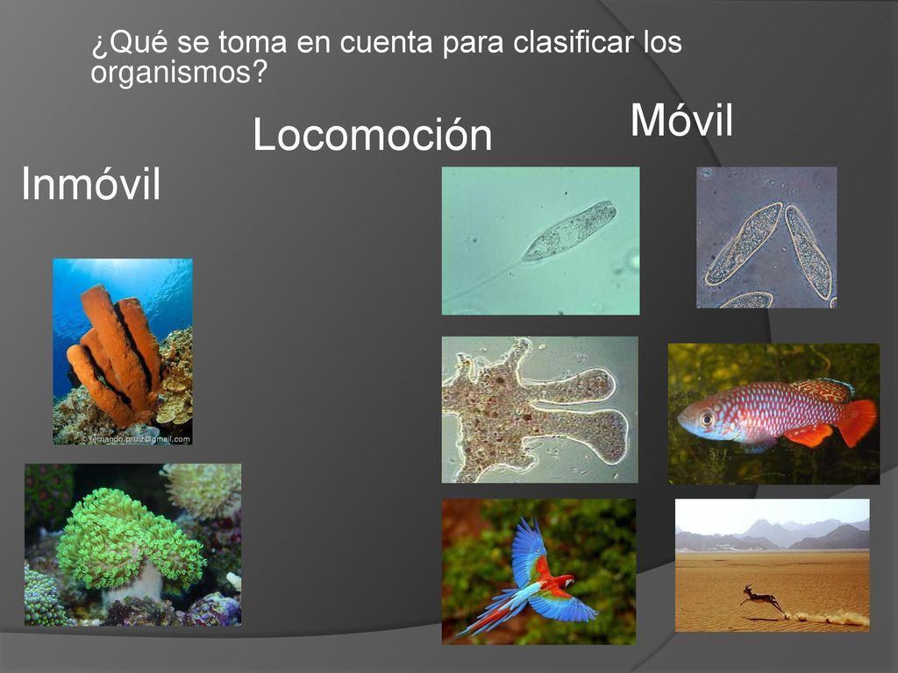

Características de los cinco reinos
- Nutrición. Autótrofa (generan su propio alimento) o heterótrofa (se alimentan de otros seres vivos).

- Organización celular. Unicelulares (poseen una sola célula) o pluricelulares (tienen dos o más células).

- Los procariotas son organismos unicelulares que carecen de estructuras unidas a las membranas, de las cuales la más notable es el núcleo. Las células procariotas tienden a ser células pequeñas y simples, que miden alrededor de 0,1 a 5 μm de diámetro.Los eucariotas son organismos cuyas células tienen un núcleo y otros orgánulos encerrados por una membrana plasmática. Los orgánulos son estructuras internas responsables de una variedad de funciones, como la producción de energía y la síntesis de proteínas.

- Respiración. Aeróbica (necesitan oxígeno) o anaeróbica (no utilizan oxígeno).

- Reproducción. Sexual, asexual o por esporas.

- Locomoción. Autónoma o inmóvil.
